Nachhaltiges Bauen · Workspace
Choose your workspace

Nachhaltiges
Bauen
CO₂ Compass
Measure the CO₂ footprint of your products — from raw material to end of life.
Launch Tool
RE-Tool
Discover circular pathways for materials and components.
Launch Tool
Service Hub
Explore Lindner's sustainable building services and build your selection.
Launch Tool
Back to Welcome